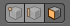
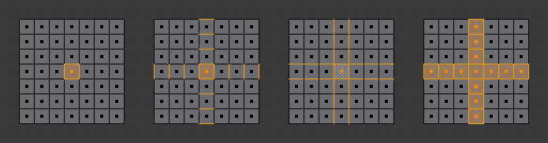

边和面¶
边¶

选择模式按钮。¶
边的选择方法与点和面一样，都是通过 RMB 单击 - 启用边选择模式，然后单击选择。按住 Shift 单击，在现有选中项基础上加选/减选。

面¶

激活面选择模式。¶
要切换到面选择模式，才能对网格进行逐面选择。通过单击上图所示的按钮切换，或者按住 Ctrl-Tab 弹出切换菜单。选择的方法还是使用 RMB ；按住 Shift，在现有选中项上加选/减选。框选、刷选和套索选择时需与表示面的小像素方块指示点相交；每一个面的中心都有一个这样的小方块。
面循环¶
参考
- 模式
编辑模式 (网格)
- 快捷键
Alt-RMB, 或者 Shift-Alt-RMB ，修改现有选中项
面循环与并排边大体相同。要选择一个面循环，没有基于选中面的菜单入口。使用 会选中先前选中面为交点的 "十字" 并排边。想要避免转换到边选择模式去选择面循环，可以使用 Alt-RMB 快捷键。

面选择模式下，栅格上的不同环选择操作。¶
最简单的，直接选择所需面。
选中面，然后 。注意看，Blender是如何选择边的，即使是在面选择模式也如此。如果这些边是需要的，并且对它们有后续的操作的话，切换到边选择模式。切换到点选择模式将会覆盖掉原来的选择，接下来回到面选择模式，就得到第四张图片的结果了。
选中面，然后 。和前面一样，Blender假装在边选择模式下，并且将已选择的面的四条边作为循环边选择操作基础。
在中心面的左侧边按下 Alt-RMB，接下来在中心面的上侧边按两次 Shift-Alt-RMB 也可以达到前面的选择结果。按两次是因为第一次点击将会移除已经选择的面循环(这种情况下，只移除最开始选择的面)，而第二次单击会将垂直的面循环加入选中项，创建一个十字区域。